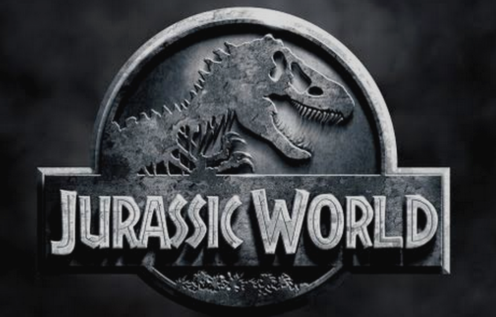

上次恶评了一下《星际穿越》，现在又出了个《侏罗纪世界》（Jurassic World）。小时候看《侏罗纪公园》就没发现有啥意思，本来一个人是绝对不会去看这种片的。无奈的是妹纸想怀旧看下续集，所以只好假装满心欢喜的奉陪 :P
看完了之后只有一个结论：彻底的烂片。如果《星际穿越》还费得了我几句口舌，这个片子我都懒得说它那么多，只想简要提几个要点：
演技奇差，情节做作，忙于说教煽情。看得出来演员是在生硬的背台词，这年头很少找得到这么差的演员了。我不明白那两个小孩的母亲，怎么会打个电话，发现姨妈没有陪侄子，就呜咽着哭得出来。我也不明白，为什么有人发现别人不知道自己侄子的年龄，就觉得是天大的没爱心，不负责似的。我侄子多的去了，不记得哪一个多少岁了很正常。可爱的我就爱，不可爱的我还非得爱啊？某些好莱坞导演继续在走他们的“小学老师”套路，总是觉得自己有资格告诉全世界，你应该爱，不爱是不对的，要怎么怎么才能叫做爱。而其实呢，他们根本不懂得什么是爱。
巨大的漏洞。一些极其弱智的漏洞，造就了这片的所有情节。关着极其危险怪兽的笼子，居然只有一道门。那道门开合极其缓慢，而且由一个无脑的女人管理。你随便去哪个监狱参观一下，或者电视里看一下，就会知道任何监狱都有至少两层牢门。这两道门绝对不会同时打开，否则门开的时候，犯人就有机会冲出去。只有当看守进入两层门之间夹层，确保犯人没有混进去，第二道门才会打开。所以关恐龙的房子，绝对不可能只有一道门，人冲出去了，恐龙也跟着出去了。也就是说，这整个故事都是瞎扯，就算能够培育出恐龙，也根本不可能发生。
人太傻，太丑，太重口味。我不明白，一个丢三落四，情绪用事，看到虫子都会尖叫，穿着高跟鞋进丛林的无脑女人，怎么可能拥有管理巨型怪兽的权力。我也不明白公园里的小朋友们，看见流着黏糊糊哈喇子的怪兽，一口吞下鲜血淋漓的牛羊，还被溅了一身水，怎么会欢呼雀跃。那种全场欢呼的场面，是在SeaWorld看可爱的Shamu表演时，才能看得到的。居然会有人对那些长相狰狞，满口血淋淋尖牙的恐龙，显示出对Shamu一样的热情？这让我感觉这片子里的所有人物，不管大人小孩，都是神经病，心理变态。
最后我想告诫父母们，为了孩子的心理健康和人格健全，请别带他们看《侏罗纪世界》。